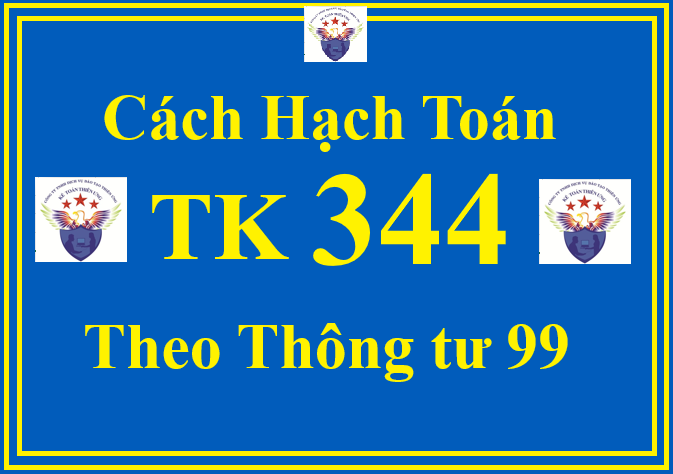

Theo Thông tư 99/2025/TT-BTC thì Tài khoản 344 - Nhận ký quỹ, ký cược dùng để phản ánh các khoản tiền mà doanh nghiệp nhận ký quỹ, ký cược của các đơn vị, cá nhân bên ngoài để đảm bảo cho các dịch vụ liên quan đến sản xuất, kinh doanh được thực hiện đúng hợp đồng kinh tế đã ký kết, như nhận tiền ký quỹ, ký cược để đảm bảo việc thực hiện hợp đồng kinh tế, hợp đồng đại lý,...
Kế toán nhận ký quỹ, ký cược phải theo dõi chi tiết từng khoản tiền nhận ký quỹ, ký cược của từng đối tượng theo kỳ hạn và theo từng loại nguyên tệ. Các khoản nhận ký quỹ, ký cược phải trả có kỳ hạn còn lại từ 12 tháng trở xuống hoặc không có quyền từ chối nghĩa vụ chi trả tại bất kỳ thời điểm nào trong thời hạn 12 tháng kể từ thời điểm kết thúc kỳ kết toán phải được trình bày là nợ ngắn hạn, các khoản nhận ký quỹ, ký cược còn lại được trình bày là nợ dài hạn.
Trường hợp nhận cầm cố, thế chấp bằng giấy chứng nhận quyền sở hữu hoặc quyền sử dụng tài sản (như giấy chứng nhận quyền sở hữu hoặc sử dụng bất động sản, sổ tiết kiệm,...) thì không phản ánh ở tài khoản này mà được trình bày trên Thuyết minh Báo cáo tài chính.
1. Kết cấu và nội dung phản ánh của Tài khoản 344 - Nhận ký quỹ, ký cược Theo Thông tư 99/2025/TT-BTC
| Bên Nợ: | Bên Có: |
| Hoàn trả tiền nhận ký quỹ, ký cược. | Nhận ký quỹ, ký cược bằng tiền. |
| Số dư bên Có: số tiền nhận ký quỹ, ký cược chưa trả tại thời điểm kết thúc kỳ kế toán. |
2. Cách định khoản hạch toán TK 344 - Nhận ký quỹ, ký cược theo Thông tư 99/2025/TT-BTC
a) Khi nhận tiền ký quỹ, ký cược của đơn vị, cá nhân bên ngoài, ghi:

Nợ các TK 111, 112,...
Có TK 344 - Nhận ký quỹ, ký cược (chi tiết cho từng đối tượng).
b) Khi hoàn trả tiền ký quỹ, ký cược cho đối tác, ghi:
Nợ TK 344 - Nhận ký quỹ, ký cược
Có các TK 111, 112,...
c) Trường hợp đơn vị ký quỹ, ký cược vi phạm hợp đồng kinh tế đã ký kết với doanh nghiệp, bị phạt theo thỏa thuận trong hợp đồng kinh tế:
- Khi nhận được khoản tiền phạt do vi phạm hợp đồng kinh tế đã ký kết: Nếu khấu trừ vào tiền nhận ký quỹ, ký cược, ghi:
Nợ TK 344 - Nhận ký quỹ, ký cược
Có TK 711 - Thu nhập khác.
- Khi thực trả khoản ký quỹ, ký cược còn lại, ghi:
Nợ TK 344 - Nhận ký quỹ, ký cược (đã khấu trừ tiền phạt)
Có các TK 111, 112.